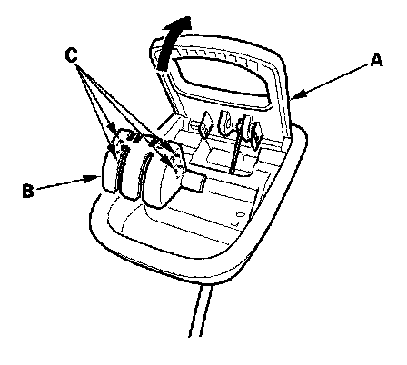
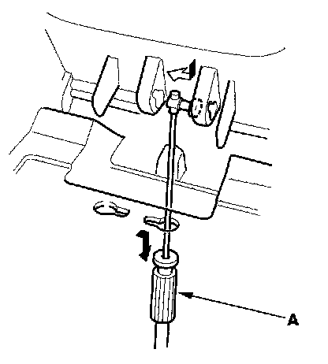

Third Row Seat-Back Recline Cable
Third Row Seat-back Recline Cable ReplacementSpecial Tools Required
KTC trim tool set SOJATP2014 *
* Available through the American Honda Tool and Equipment Program
NOTE:
- Use the appropriate tool from the KTC trim tool set to avoid damage when removing components.
- Take care not to kink the cable.
1. Remove the third row seat-back recline lever.

2. While holding the lever (A) open, carefully pry out the cover (B) with trim tool to release the tabs (C), then remove the cover.

3. Disconnect the recline cable (A).
4. Install the third row seat-back recline cable in the reverse order of removal, and note these items:
- Make sure the cable is connected securely.
- Make sure the seat unlatches properly and latches securely.